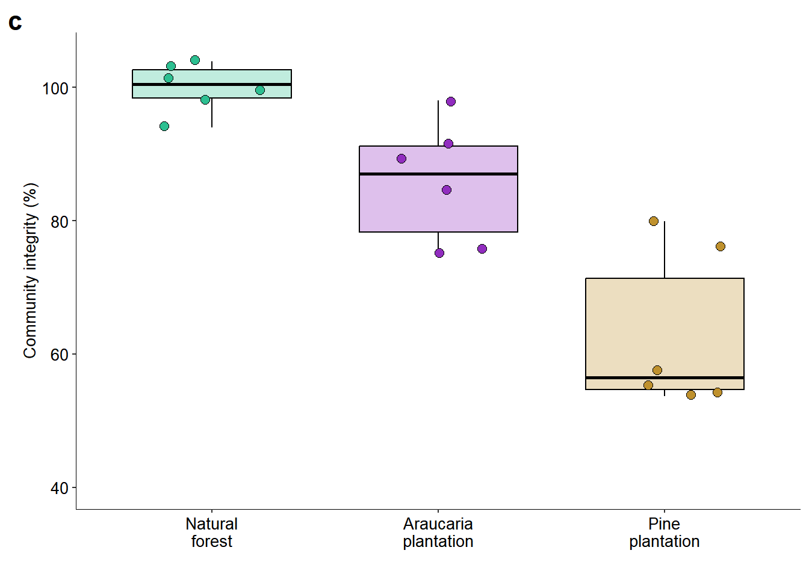

set.seed(26)6 Bird Community Integrity
Predictor variables:
Forest type - We performed an ANOVA test followed by a Tukey’s post hoc test to identify which forest types exhibited significant differences in community integrity from each other.
Understorey vegetation obstruction - We performed simple linear regression analyses to investigate the effect of understorey vegetation obstruction on community integrity.
Ensuring Reproducibility
Load packages
library(ggplot2)
library(ggpubr)
library(vegan)
library(dplyr)Importing data
# https://knb.ecoinformatics.org/view/doi:10.5063/F1QR4VK1
setwd("C:/Users/ivana/OneDrive/FLONA_aves/data")
data <- read.csv("FLONA-PF_dataset.txt", sep = "\t")Preparing data
# Renaming forest types for consistent ordering in the plot
data$forest.type <- recode(data$forest.type,
"Natural_forest" = "1.Natural_forest",
"Araucaria_plantation" = "2.Araucaria_plantation",
"Pine_plantation" = "3.Pine_plantation")
abund <- data[,c(9:59)]
rel.abund <- abund/rowSums(abund)6.1 Forest type
6.1.1 Calculating Community Integrity
# Defines the row indices for control sites representing natural forest
control.rows <- c(1:6)
# Calculates the Bray–Curtis distance matrix and extracts the values among control sites (natural forest)
bray.cf <- as.matrix(vegdist(rel.abund, method = "bray"))[control.rows, control.rows]
# Calculates the community integrity for control sites as the average similarity (1 minus mean Bray–Curtis distance)
int.cf <- mean(1 - colMeans(bray.cf))
# Calculate the Bray-Curtis index between all sites (control and treatment)
bray.all <- as.matrix(vegdist(rel.abund, method = "bray"))[control.rows, ]
# Calculate the community integrity index for all sites
# Scaled by the average similarity of the control sites and expressed as a percentage
int.all <- ((1 - colMeans(bray.all)) / int.cf) * 100
# Display the community integrity index for all sites
int.all 1 2 3 4 5 6 7 8
101.61364 94.01150 103.93656 103.00584 98.10394 99.32853 91.83015 76.08282
9 10 11 12 13 14 15 16
84.77477 75.14153 98.01282 89.30392 75.94806 53.72609 55.53405 54.43151
17 18
79.95784 57.49437 6.1.2 Calculating ANOVA
# Performs a one-way ANOVA to test the effect of forest type on community integrity and checks for normality of residuals
anova <- aov(int.all~ data$forest.type)
summary(anova) Df Sum Sq Mean Sq F value Pr(>F)
data$forest.type 2 4219 2109.6 26.94 1.08e-05 ***
Residuals 15 1174 78.3
---
Signif. codes: 0 '***' 0.001 '**' 0.01 '*' 0.05 '.' 0.1 ' ' 1shapiro.test(anova$residuals)
Shapiro-Wilk normality test
data: anova$residuals
W = 0.93721, p-value = 0.2594The residuals of the ANOVA model are normally distributed (p > 0.05), so it is appropriate to proceed with this test to compare species composition between forest types.
# Performs Tukey's HSD test to compare pairwise differences between forest types
TukeyHSD(anova) Tukey multiple comparisons of means
95% family-wise confidence level
Fit: aov(formula = int.all ~ data$forest.type)
$`data$forest.type`
diff lwr upr
2.Araucaria_plantation-1.Natural_forest -14.14233 -27.41207 -0.8725946
3.Pine_plantation-1.Natural_forest -37.15135 -50.42109 -23.8816100
3.Pine_plantation-2.Araucaria_plantation -23.00902 -36.27875 -9.7392777
p adj
2.Araucaria_plantation-1.Natural_forest 0.0360896
3.Pine_plantation-1.Natural_forest 0.0000077
3.Pine_plantation-2.Araucaria_plantation 0.0011497The results showed that the bird communities in the understorey differed significantly between the three forest types (ANOVA: F(2,15) = 26.94, p < 0.001). Pairwise comparisons revealed that both plantation types had different bird communities compared to the natural forest. There was also a significant difference in community integrity between the two plantation types.
6.1.3 Plotting the graph
tab <- data.frame(forest.type = data$forest.type,
integrity = int.all)
# Creates a vector of colours, assigning one colour to each forest type (6 samples per type)
color <- rep(c("#2DBF91", "#912DBF", "#BF912D"), each = 6)
plot_comp1 <-
ggplot(data = tab,
aes(x = forest.type, y = integrity)) +
geom_boxplot(outlier.shape = NA,
width = 0.7, col = "black",
fill = c("#2DBF91", "#912DBF", "#BF912D"),
alpha = 0.3, show.legend = FALSE) +
geom_jitter(shape= 21,
width = 0.25, height = 0.3, colour = "black",
fill = color, size = 2.5) +
scale_y_continuous(limits = c(40, 105),
breaks = c(40,60,80,100)) +
scale_x_discrete(labels = c("Natural\nforest", "Araucaria\nplantation",
"Pine\nplantation"))+
labs(x = " ", y = "Community integrity (%)", colour="black",
tag = "c") +
theme_pubr(base_size = 10) +
theme(axis.line = element_line(linewidth = 1/3))+
theme(plot.tag = element_text(size = 16, face = "bold"))6.1.4 Saving the graph
plot_comp1
ggsave(
plot = plot_comp1,
filename = "composition_foresttype.png", dpi = 500,
width = 7, height = 7, units = 'cm')6.2 Understory vegetation obstruction
6.2.1 Preparing data
# Creates a new data frame with forest type, species composition, and understorey vegetation obstruction
set <- data.frame(forest.type = data$forest.type,
int.all = int.all,
obstruction = data$obstruction)6.2.2 Fitting the regression model
# Fits a linear model to assess the effect of vegetation obstruction on species composition
reg_int = lm(set$int.all ~ set$obstruction)
# Displays a summary of the model
summary(reg_int)
Call:
lm(formula = set$int.all ~ set$obstruction)
Residuals:
Min 1Q Median 3Q Max
-33.188 -10.740 4.382 12.175 17.026
Coefficients:
Estimate Std. Error t value Pr(>|t|)
(Intercept) 30.3533 20.1200 1.509 0.1509
set$obstruction 1.0773 0.4058 2.655 0.0173 *
---
Signif. codes: 0 '***' 0.001 '**' 0.01 '*' 0.05 '.' 0.1 ' ' 1
Residual standard error: 15.3 on 16 degrees of freedom
Multiple R-squared: 0.3058, Adjusted R-squared: 0.2624
F-statistic: 7.048 on 1 and 16 DF, p-value: 0.0173# Tests the normality of model residuals
shapiro.test(reg_int$residuals) # It is normal (p > 0.05)
Shapiro-Wilk normality test
data: reg_int$residuals
W = 0.91843, p-value = 0.12136.2.3 Plotting the graph
plot_comp2 <-
ggplot(set, aes(x = obstruction, y = int.all,
fill = forest.type)) +
scale_y_continuous(limits = c(30, 110),
breaks = c(40,60,80,100)) +
geom_smooth(method = "lm", formula = y ~ x, se = TRUE, color = "black", fill = "gray") +
geom_point(colour = "black", size = 2.5, shape = 21) +
scale_fill_manual(values = c("#2DBF81", "#812DBF", "#BF812D"),
labels = c("Natural forest", "Araucaria plantation",
"Pine plantation")) +
labs(x = "Understorey vegetation obstruction (%)", y = "Community integrity (%)",
tag = "c") +
theme_pubr(base_size = 10) +
theme(legend.position = "none") +
theme(plot.tag = element_text(size = 16, face = "bold"))6.2.4 Saving the graph
plot_comp2 
ggsave(
plot = plot_comp2,
filename = "composition_understory.png", dpi = 500,
width = 7, height = 7, units = 'cm')